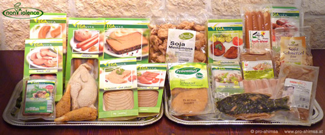
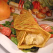
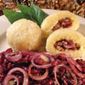
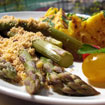
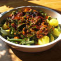

Der wichtigste Punkt zur Umsetzung von Ahimsa betrifft unsere Nahrung. Doch auch alle anderen Konsumbereiche wie z.B. die Bekleidungsindustrie, Pflege- und Hygieneartikel, Putz- und Waschmittel, etc.
Durch eine bewusstes Kaufverhalten, kann man einunglaublich starkes Zeichen für eine gewaltfreiere Welt setzen, denn ein gut überlegter Kauf kann wirtschaftlich gesehen, wie eine Spende für einen guten Zweck wirken.
Selbst wenn man nicht auf den guten Geschmack von Fleisch, Wurst, Eiern oder Milch verzichten will, gibt es gewaltfreie Alternativen, für die kein Tier leiden muss. Diese Alternativen schmecken verblüffend ähnlich wie das gewohnte und es gibt sie mittlerweile bereits in fast allen Supermärkten.
|  |
|



 (Alle abgebildeten Produkte und Gerichte sind rein pflanzlich.) |
Fast alle diese Produkte sind nicht wesentlich teurer oder kosten in etwa das Gleiche wie die herkömmlichen Varianten. Man bekommt sie in Supermärkten, Reformhäusern, Bio-Geschäften oder über Internetversand (www.veganversand.at, www.veganversand-lebensweise.at). Die Supermarkte Billa, Merkur sowie seit neuestem auch Spar bieten nicht nur Tofu sondern auch verschiedene veg. Würste, veg. Schnitzel, veg. Leberkäse, veg. Cevapcici und vieles mehr zu günstigen Preisen an.
Wo, wie und vor allem in welch großer Bandbreite man Tierleid freie Produkten bekommt findet ihr auf: www.animalfair.at
Konventionelle Putzmittel, Kosmetikprodukte und Medikamente, ja sogar jeder neue Duftstoff für herkömmliche Waschmittel wird an Tieren getestet. Wer einmal Bilder davon gesehen hat weiß: Tierversuche sind eine wirklich grausame und bedenkliche Erfindung.
→ Leider bezahlen beinahe alle herkömmlichen Hersteller für Tierversuche!
Gewaltfeie oder tierfreundliche Alternativen sind zwar in der Politik selten anzutreffen. Doch kann man wenigstens jenen Parteien den Vorzug geben, die nicht aktiv gegen den Tierschutz und Tierschützer vorgehen. Im Sinne der Gewaltvermeidung müsste man in Österreich demnach folgende Parteien meiden:
ÖVP - sie unterstützen nicht artgerechte Haltungsforemen in der Viehwirtschaft und haben Tierschützer wie Terroristen bekämpfen lassen!
FPÖ - Fremdenfeindlichkeit und diskriminierende Plakate.
Einzig alleine die Grünen mobilisieren sich immer wieder für Tierrechte und Tierschutz in der Verfassung!
{kind=link}
{kind=link}
{kind=link}
{kind=link}
{kind=link}
{kind=link}
{kind=link}
{kind=link}
{kind=link}
{kind=link}